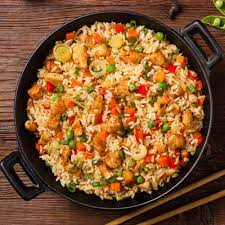

chicken_rice

Description
chicken rice is usually cooked with chicken added with masalas separately and then mixing it in rice to complete it. However, if you want to make this lengthy cooking process short, here we bring you a recipe to make chicken rice in one pot! This recipe is easy and quick to make. All you need to do is first mix chicken with masalas, then add chicken stock with it to cook rice. This recipe requires minimum ingredients, minimum effort and maximum taste!
Ingredients
- ½ kg boneless chicken
- ½ tsp salt
- 2 tbsp plain yogurt
- 1 tsp ginger paste
- 1 tsp garlic paste
- ¼ tsp turmeric
- ½ tsp red chili
- 3 tbsp cooking oil
- ½ cup sliced onion
- 2 bay leaves
- ¼ tsp ginger paste
- 1 ½ cup-soaked basmati rice
- 1 tsp salt
- 1 ½ cup hot coconut milk
- 1 cup hot water
- ½ tsp garam masala
- 1 ½ tbsp fresh coriander
- 1 tsp ghee
Steps
- Mix the chicken pieces with salt, yogurt, ginger paste, garlic paste, turmeric, and red chili
- wrap and marinate for 15 minutes
- Place the chicken in a pot with cooking oil and cook until brown for 10-12 minutes on low-medium heat
- Remove the chicken pieces, add sliced onions, a splash of water, bay leaves, ginger paste, and rice that has been soaked for 30 minutes
Pour hot coconut milk and hot water
- Place the chicken back into the pot
- Cook for 10-15 minutes on low-medium heat with the lid on
- Sprinkle garam masala, chopped coriander leaves, and ghee
- Give it one last stir before serving
- Ready to Enjoy!